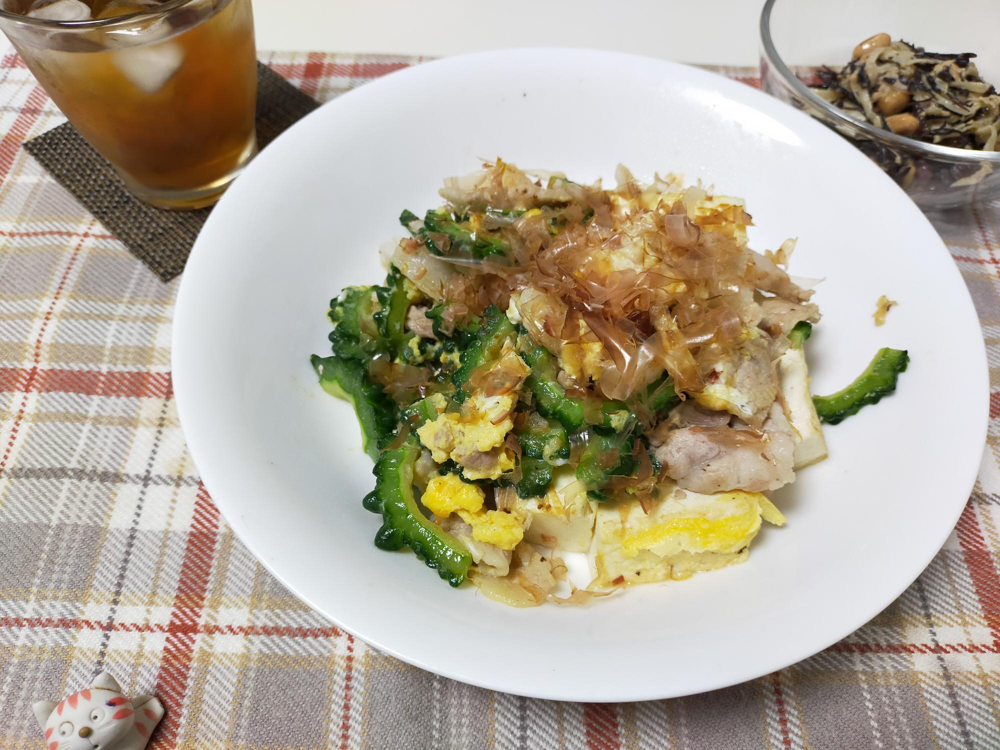

ゴーヤチャンプルー（鶏ガラスープ味）
材料・金額
| 材料 | 購入金額 | 使用量 | 金額 | kcal |
|---|---|---|---|---|
| ゴーヤ1本 | 138 | 可食部240g | 138 | 35 |
| 豚バラスライス200g | 491 | 200g | 491 | 790 |
| 木綿豆腐175g×2pac | 124 | 1pac | 62 | 140 |
| 卵1pac | 192 | 2個 | 38 | 152 |
| しょうが | 112 | 10g | 11 | - |
| 鰹節2.5g×6pac | 102 | 1pac | 17 | - |
| その他調味料分 | - | - | - | 40 |
| 合計（610g） | - | - | 757 | 1,157 |
| 1人分（合計×0.5） | - | - | 379 | 579 |
作り方
- ゴーヤはヘタをとり縦半分に切って、スプーンでワタと種をとり、2mm程度にスライスする
- ゴーヤに塩小1/2振り、もみこむ
- 豆腐を6等分に切り、フライパンにごま油小1を熱し、こんがり焼き目をつけ、取り出す
- しょうがは千切りにする
- 卵を溶く
- 豚肉は一口大に切り、塩コショウする
- ゴーヤがしんなりしたら、水にさらしザルにあげておく
- 3.のフライパンで豚肉＋しょうがを炒め（油は足さない）、香りがでたらゴーヤ、鶏ガラスープの素小1を入れて炒める
- ゴーヤがしんなりしたら、豆腐を戻しいれる
- 卵液を回し入れ、全体炒め、卵液が固まってきたら、塩コショウで味を整えて皿に盛り、鰹節を振って出来上がり
振り返り
ゴーヤチャンプルーの味付けが迷子です。今回は鶏がらスープの素で味変にマヨを召喚しましたが、昨年はほんだしでした。一昨年はオイスターソースでした。次回はオイスターソース＋にんにく醬油でいってみようかと思います。